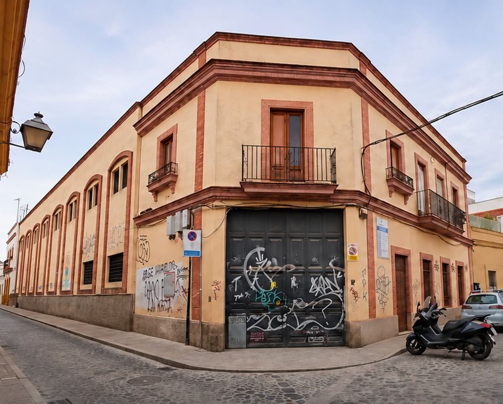

El centro de Jerez vuelve a estar habitado, y es el momento de entrar
Desde 2022, el precio de la vivienda en Jerez casi se ha duplicado. Te contamos qué ha pasado, por qué el centro histórico es la gran oportunidad y hacia dónde apunta el mercado.
2022: un edificio vacío que se convirtió en 24 hogares
En 2022 sacamos al mercado una promoción muy especial: 24 viviendas en la confluencia de las calles Clavel y Gómez Carrillo, en pleno centro. Donde antes hubo dependencias de Correos y un almacén mayorista de ropa, había un edificio cerrado, con la persiana llena de pintadas.
La rehabilitación lo transformó en un conjunto residencial de dos plantas en torno a un gran patio interior. Hoy está 100 % vendido, y la calle ha recuperado vida.

Antes Después
DespuésEsta promoción no es un caso aislado: es el reflejo de lo que está pasando en toda la ciudad.
Lo que ha pasado desde entonces
Quien compró en 2022 lo hizo en un buen momento. Según idealista, el precio medio de la vivienda en Jerez pasó de 1.051 €/m² en enero de 2022 a 2.018 €/m² en octubre de 2026.
Precio medio de la vivienda en Jerez de la Frontera
Dicho de otro modo: una vivienda de 70 m² que en 2022 se anunciaba por unos 74.000 €, hoy se anuncia de media por más de 140.000 €.
¿Por qué el centro?
Durante años, el centro histórico de Jerez se fue vaciando: edificios cerrados, bajos sin uso y familias que se marchaban a la periferia. Hoy la tendencia se ha dado la vuelta, y hay tres motivos:
- Se vive a pie. Comercio, colegios, centro de salud, estación y ocio a un paseo. Cada vez más gente valora no depender del coche.
- Hay poca vivienda nueva. En el casco apenas queda suelo libre: casi toda la oferta nueva sale de rehabilitar edificios. Poca oferta y mucha demanda sostienen los precios.
- Es el corazón turístico. El vino, el flamenco, la Feria o el Gran Premio de Motociclismo atraen visitantes todo el año, y eso dinamiza el comercio y la hostelería del centro.
¿Hacia dónde va el mercado?
Nadie puede garantizar el futuro, pero los indicadores apuntan en una dirección clara. El alquiler también sube: según idealista, en agosto de 2026 se situaba en torno a 10,6 €/m² al mes, un 9,4 % más que un año antes, con una rentabilidad bruta media del 6,5 %.
Con estos datos, comprar en el centro tiene sentido tanto para vivir como para invertir: la demanda de alquiler es alta y la oferta de vivienda nueva con buenas prestaciones sigue siendo escasa.
Tres claves si estás pensando en comprar
- Obra nueva o rehabilitación integral. Te ahorras derramas, reformas y sorpresas, y disfrutas de aislamiento e instalaciones modernas.
- Extras difíciles de encontrar en el casco. Garaje, trastero o piscina marcan la diferencia, tanto para vivir como al alquilar o revender.
- Decidir con números. Calcula el desembolso total (impuestos, notaría, honorarios) y el estudio del banco antes de reservar.
Tu próxima vivienda en el centro de Jerez
Tras Gómez Carrillo, comercializamos en exclusiva Méndez Núñez Homes: 13 viviendas de obra nueva con garaje, trastero y piscina en cubierta, en pleno centro de Jerez. Te ayudamos a hacer los números antes de decidir.
Fuentes: idealista, histórico de precios de venta en Jerez de la Frontera (consultado en noviembre de 2026); idealista, informe de precios de alquiler de Jerez de la Frontera (agosto de 2026). Los precios son de oferta, no de compraventa escriturada. La evolución pasada de los precios no garantiza la futura; este artículo es informativo y no constituye asesoramiento financiero.